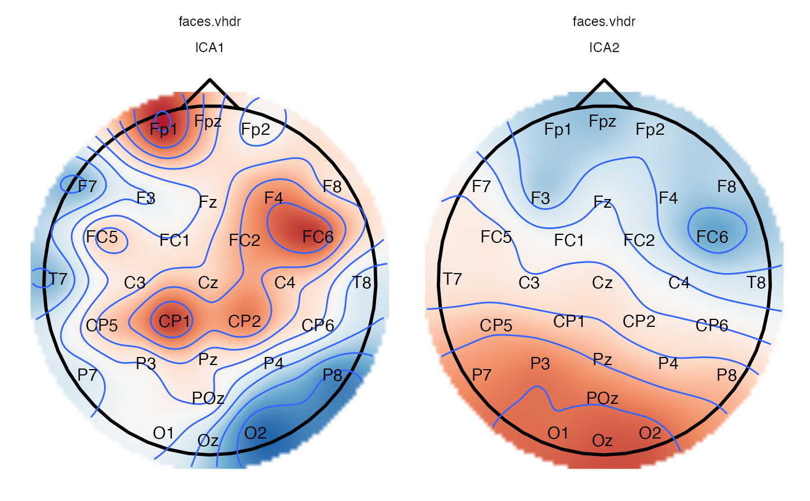

R/plot.R
plot_components.RdNote that unlike plot_topo, there is no need for faceting, or adding layers.
plot_components(data, ..., .projection = "polar", .standardize = TRUE)An eeg_ica_lst
arguments passed to interpolate.
.Projection type for converting the 3D coordinates of the electrodes into 2d coordinates. .Projection types available: "polar" (default), "orthographic", or "stereographic"
Whether to standardize the color scale of each topographic plot.
Other plotting functions:
annotate_events(),
annotate_head(),
eeg_downsample(),
ggplot.eeg_lst(),
plot.eeg_lst(),
plot_in_layout(),
plot_topo(),
theme_eeguana()
Other ICA functions:
eeg_ica_cor_tbl(),
eeg_ica_keep(),
eeg_ica_show(),
eeg_ica_summary_tbl(),
eeg_ica_var_tbl(),
eeg_ica()
Other topographic plots and layouts:
layout_32_1020,
plot_in_layout(),
plot_topo()
# For demonstration only, since ICA won't converge
library(ggplot2)
# Suppressing an important warning:
suppressWarnings(data_faces_10_trials %>%
eeg_ica(-EOGH, -EOGV, -M1, -M2, .method = fast_ICA, .config = list(maxit = 10))) %>%
eeg_ica_keep(ICA1, ICA2) %>%
plot_components() +
annotate_head() +
geom_contour() +
geom_text(color = "black") +
theme(legend.position = "none")
#> # ICA is being done using fast_ICA...
#> # ICA finished in 9 iterations. With a tolerance of 0.912861. (Maximum expected tolerance: 1e-06.)
#> # ICA took 1.22 secs
